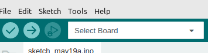
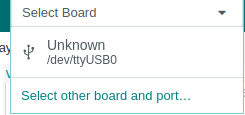
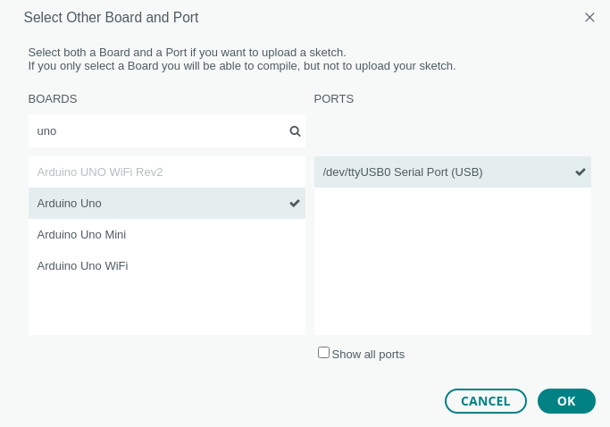

Einrichten der Programmierungumgebug
Starten von Linux Mint auf den Rechnern
- Stecke den USB-Stick in die Buchse auf der linken Seite des Rechners.
- Schalte den Rechner ein.
- Drücke sofort nach dem Einschalten die F12-Taste und halte sie gedrückt, bis du einen lauten Signalton hörst.
Der Rechner startet das Boot-Menü
- Wähle ubuntu...
- Der Rechner fährt das Linux-Betriebssystem auf dem USB-Stick hoch.
- Berühre während der Arbeit den Stick nicht mehr. Sobald der Rechner den Kontakt zum Linux-System verliert, stürzt er ab und muss neu gestartet werden.
Anschluss des Arduino Unos
Schließe den Arduino mit dem blauen USB-Kabel an einer der beiden Buchsen auf der rechten Seite des Rechners an.
Starten der Programmier-Umgebung
Doppelklicke auf das Symbol ArduinoIDE auf dem Desktop.
Der Start dauert eine Weile, bitte klicke nicht zu oft auf das Symbol, sonst startest du viele Instanzen des Programms und musst noch länger warten.
Einstellen des Arduino Unos in der Software
- Klicke auf die Pfeilspitze rechts von Select Board:

- Wähle Unknown /dvttyUSB0

- Trage im Feld BOARDS uno ein.
- Klicke auf Arduino Uno

- Klicke auf OK
Der Arduino Uno ist jetzt angeschlossen und kann programmiert werden.
zurück